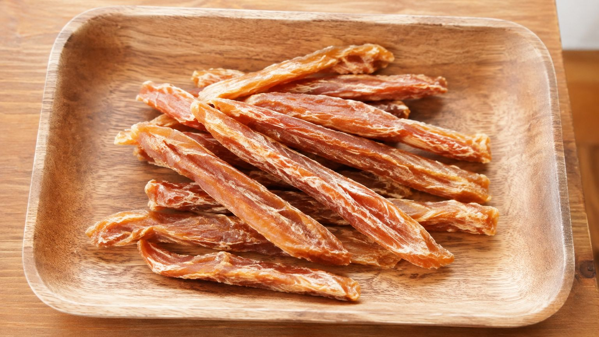

サンプル：はじめてのおやつ、どれを選べばいい？

「たくさんあって、どれを選べばいいか分からない」というお声をよくいただきます。初めての方に向けて、選ぶときの目のつけどころをご紹介します。
かたさで選ぶ
カリカリと軽い歯ざわりのものと、噛みごたえのあるものがあります。しっかり噛むのが好きなわんちゃんには噛みごたえのあるタイプ、小型犬やシニアのわんちゃんには軽い食感のものを選ばれる方が多いです。
それぞれの食感については、商品ごとの説明をオヤツ屋さんのページに載せています。
少しずつ試してみる
初めての素材は、まず少量から様子を見ていただくのがおすすめです。食べ慣れないものを一度にたくさん与えると、おなかがゆるくなることがあります。
ごはんの量とのバランスもあるので、その日のごはんを少し控えめにして調整される方もいらっしゃいます。
保管のしかた
直射日光と湿気を避けて、涼しい場所で保管してください。開封後はできるだけ袋の口を閉じて、早めに食べきっていただくのが安心です。
気になることがあれば、店頭でもお気軽にお声がけください。わんちゃんの体格やふだんの食べ方をお聞きしながら、一緒に選ばせていただきます。